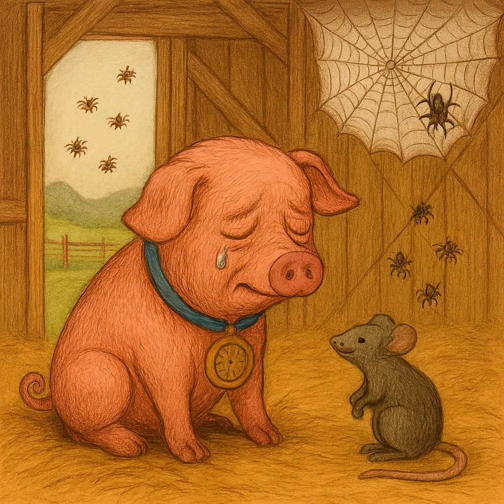

Charlotte passed away quietly at the fair, leaving behind her egg sac. Wilbur carried it back to the barn, protecting it with all his heart. When the eggs hatched, hundreds of tiny spiders floated away on the wind, but a few stayed behind. They became Wilbur’s new companions, filling the barn with life and chatter. As the years passed, Wilbur grew old, surrounded by Charlotte’s children and grandchildren. He often thought of his dear friend and whispered to himself, “Charlotte was my true friend. She saved my life with love and words.” And so, her legacy lived on, not only in the web she spun but in the heart of the pig she saved.
The End